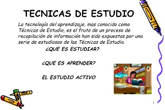
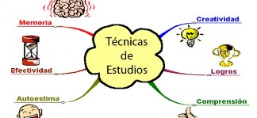

Tecnicas de estudio


Por qué fracasan tantos alumnos en sus estudios? La respuesta a esta cuestión radica en las deficiencias en las técnicas de trabajo intelectual que se emplean habitualmente. En general, los estudiantes no dominan completamente las técnicas básicas de razonamiento ni de expresión oral y escrita, lo cual les genera dificulta ...
Puntos importantes

Querer estudiar
Tener motivación para aprender,aceptada una meta, el camino hacia ella se hace más fácil; nuestras metas en el estudio.

Aprender las reglas (pocas y claras)
Sólo se puede mejorar aquello que se conoce bien.

Prepararse
Reunir todas las condiciones favorables para aprender y asociar sentimientos agradables referente al estudio,así se asimilará y se recordará mejor.

Practicarlas hasta que se conviertan en hábito
La repetición continuada y el repaso hace muy fuerte la conexión entre los elementos estudiados, reduciendo mucho el olvido.
La repetición continuada y el repaso hace muy fuerte la conexión entre los elementos estudiados, reduciendo mucho el olvido.